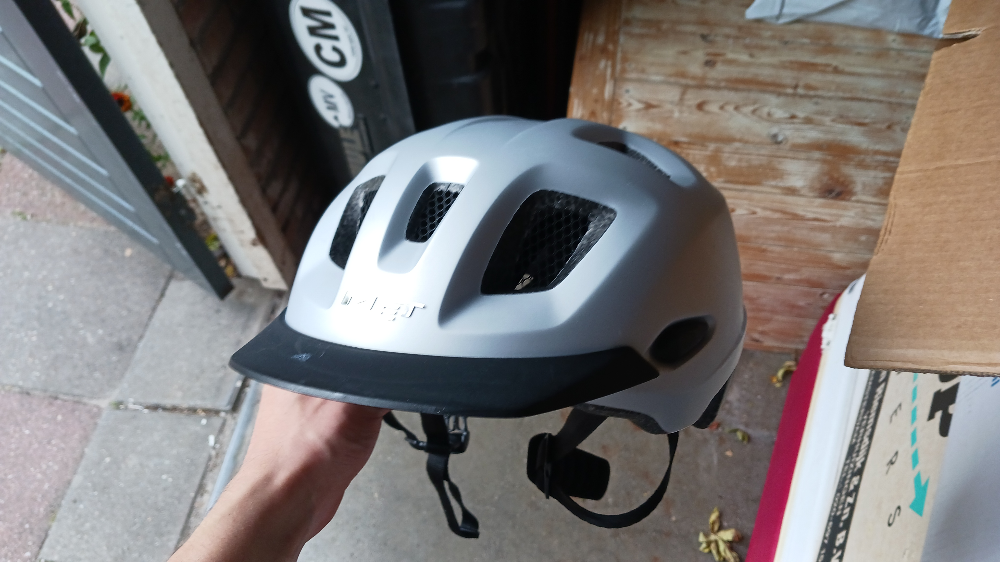

When you start skateboarding, it is important to have the right gear,
including safety gear, to protect yourself from falls. And yes, I know
what you’re thinking. I know it looks cooler to not wear it, since many
pro skaters don’t, but ask yourself this: As a beginner, would I rather
look cool and risk getting hurt, or is sacrificing the cool factor worth
it to keep myself safe?
What Gear Do I Need?
Helmet
(most important!!!)

- Your brain is a vital organ. If you are a beginner, you are more
likely to hurt your head
- A bad enough blow to the head could threaten or take your life,
which is pretty bad if you ask me. So wear a helmet.
Other Important Gear:
• Knee Pads
• Wrist Guards
• Skate Shoes (preferably skate brand but any flat soled shoe can
work)
When you are more experienced and know how to fall “correctly”, safety
gear is not as important, but as a beginner, the better idea is to wear
it. You will need:
- Helmet: This is the most important piece of gear, since head
injuries are the most important to avoid. Your brain is a vital organ,
and hurting it even a little bit can have permanent consequences, such
as impaired movement, thinking, and emotions. In extreme cases, repeated
blows to the head can even result in Hemorrhage and/or CTE. As a
beginner, you are very prone to head injuries. So wear a helmet.
- Knee Pads: Although not as important as a helmet, it is still a
smart choice to protect your knees from potential sprains, breaks, or
fractures. A bad enough blow to the knee could really shake your
confidence in getting back on the board. Not absolutely necessary, but
definitely recommended.
- Elbow Pads: Just like knee pads, elbow pads are important for
the same reasons. Even though your elbows are not as important as your
knees when it comes to pushing, cruising, and doing tricks, they are an
important in keeping your arm intact, and your arms are important for
balance. Wrist guards: Wrist fractures are no fun, which I know from
personal experience. I recommend these since the novice skater often
breaks their fall with their wrists.
- Skate Shoes: Technically you can skateboard in any shoe, but a
sturdy and flat-soled one that is built specifically for skateboarding
is often the way to go. Skate shoes are built so that A: your feet don’t
slip off the grip tape while you are riding, and B: to maximize your pop
(jump height) when doing tricks.